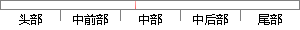

本系统提供注册功能，非系统用户可以通过主页的注册功能成为系统用户。
片段位置图

相似结果|
相似片段 1：）系统为管理员提供了管理用户信息、课程信息和平台信息的功能。用户信息的管理包括：给用户通过设定用户类型为用户分配权限，未设定前注册用户的类型均为学生；删除不良用户。课程信息管理是指可以查看课程信息
相似片段 2：）用户的注册/登录及管理这两部分是一般信息管理类系统都有的部分，它提供的功能包括系统注册用户的登录、初始用户的注册、用户找回密码、查看用户注册信息，在 Android 客户端及通过 WEB 登录系统时均可以进行。
相似片段 3：主要是进行访问用户的身份验证，以避免非法用户访问恶意系统造成损失。本模块的功能业务包括用户注册、用户登陆，其中用户注册与一般系统的用户注册不同，本系统的用户注册只能由系统管理员进入后台后通过用户注册
相似片段 4：单一的信息编号，推送至网上展厅进行展示。非注册用户可以查阅发布信息除联系方式、价格等内容外的概述情况，注册用户可以查阅发布信息的详细内容。本系统提供交易搜索功能，注册用户可在搜索窗口，按照条件语句输入
相似片段 5：dengIuservlet．java的．java文件，而注册用户(即往数据库中添加新用户)的JSP／Servlet代码在一个名为AddServlet．java的文件中。4．2．2系统主页面设计用户通过验证进入本系统后就会
相似片段 6：5.1 系统主页面用户通过网站网址进入到系统，网站首页是所有用户都能浏览的，所有用户都可以看到分模块显示的不同类别的商品信息，注册用户点击不同的商品类别栏，可以查看详细的商品信息，收藏商品，购买商品
|
※ 片段修改建议 ※
近似词参考：- 提供：供给 供应
- 功能：功效
- 系统：体系
- 通过：经由过程
- 功能：功效
- 系统：体系
系统自动生成语句：本体系供给注册功效，非体系用户可以经由过程主页的注册功效成为体系用户。
注：本片段修改建议为系统自动生成，仅供参考。